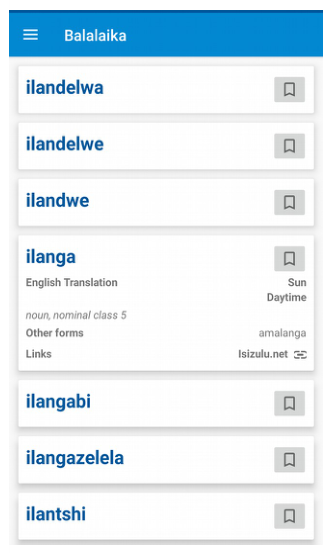
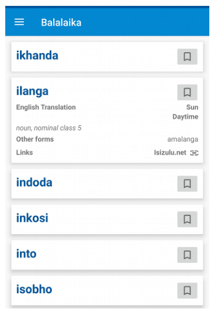

RAIL 2020Traduction automatique
Utilisabilité et accessibilité des dictionnaires de langues bantoues à l'ère numérique : accès mobile dans un environnement ouvert
Traduction automatique, non relue par un humain. L'article original est la version de référence ; les phrases soulignées sont celles dont les contrôles automatiques n'étaient pas sûrs.
Proceedings of the first workshop on Resources for African Indigenous Languages.
Traduction par Ernst van Gassen (Arktos AI Lab), sous licence CC BY-NC 4.0 comme l'original. Réutilisation permise avec attribution, à usage non commercial uniquement. Les auteurs originaux n'ont pas relu ni approuvé cette traduction.
Texte brut réutilisable, avec sa licence : Français · LICENCE
Affiliations
Thomas Eckart, Sonja Bosch, Uwe Quasthoff, Erik Körner, Dirk Goldhahn, Simon Kaleschke
Natural Language Processing Group, University of Leipzig, Germany
Department of African Languages, University of South Africa, Pretoria, South Africa
Adresses e-mail retirées pour la protection de la vie privée. Elles figurent dans le PDF original.
Résumé
Cette contribution décrit une application de dictionnaire mobile gratuite et ouverte basée sur des données de dictionnaire ouvertes. Un accent particulier est mis sur la convivialité et la présentation des données adaptée à l'utilisateur. Cela inclut, en plus de l'ordre alphabétique des lemmes, d'autres critères de sélection, de regroupement et d'accès du vocabulaire. Au-delà de la fonctionnalité de recherche pour les radicaux ou les racines - nécessaire en raison de la complexité morphologique des langues bantoues - le regroupement des lemmes par domaine de sujet de difficulté variable permet une personnalisation. Un profil de dictionnaire définit les options de présentation disponibles des données du dictionnaire dans l'application et peut être spécifié en fonction des besoins du groupe d'utilisateurs respectif. Des embeddings de mots et des approches similaires sont utilisés pour lier des mots sémantiquement similaires ou apparentés. La structure de données sous-jacente est ouverte pour les dictionnaires monolingues, bilingues ou multilingues et supporte également la connexion à des ressources externes complexes comme les Wordnets. L'application dans son état actuel se concentre sur les données de dictionnaire xhosa et zoulou, mais plus de ressources seront intégrées bientôt.
Mots-clés
données de dictionnaire, application mobile, utilisabilité
1. Introduction
Les ensembles de données lexicales sont une ressource indispensable pour divers groupes d'utilisateurs, allant des écoliers aux créateurs de texte professionnels. Cependant, les méthodes traditionnelles de présentation et de diffusion de ces connaissances précieuses au moyen de livres imprimés n'atteignent plus tous les utilisateurs potentiels. De nouvelles méthodes d'accès aux données et de participation doivent être identifiées et mises en œuvre dans le cadre de leur développement ultérieur. Bien que de nombreuses ressources pertinentes soient déjà disponibles via des pages Web, les tendances récentes à l'utilisation étendue d'applications mobiles dédiées (applications) notamment par un public plus jeune ne sont prises en compte que dans une faible mesure et ont conduit - le cas échéant - à une variété d'applications incompatibles, propriétaires et donc - après un certain temps - abandonnées avec des stocks de données non maintenues. La communauté de la téléphonie mobile en Afrique connaît une croissance rapide. Dans le cas de l'Afrique du Sud, il a été rapporté par Statistics South Africa que la proportion de ménages possédant des téléphones mobiles a significativement augmenté, passant de 31,9 % en 2001 à 88,9 % en 2011, tandis qu'une enquête communautaire en 2016 (Statistics South Africa, 2016) a indiqué une nouvelle augmentation à 93,8 % de ménages. Les téléphones mobiles relèvent de la catégorie « biens ménagers » et, chose intéressante, ont obtenu le pourcentage le plus élevé après les cuisinières électriques, les téléviseurs et les réfrigérateurs. Des versions mobiles de dictionnaires de langues bantoues pourraient donc faciliter l'accessibilité à un grand pourcentage de la population en contraste avec les dictionnaires traditionnels qui sont chers, souvent épuisés et même obsolètes. De tels dictionnaires électroniques économisent également du temps aux utilisateurs par rapport aux dictionnaires papier. De plus, ils « économisent de la mémoire de travail pour le traitement de la compréhension plutôt que d’être perturbés en prenant beaucoup de temps pour trouver des mots dans des dictionnaires traditionnels » (Deng et Trainin, 2015:58). En tenant compte de cet environnement général, cette contribution se concentre sur une application de dictionnaire Android conçue comme un projet open source pour améliorer la visibilité des ressources disponibles et comme une tentative d'atteindre et d'activer de nouveaux groupes d'utilisateurs. Il sera démontré comment les ressources disponibles - en partie compilées ou préparées par les auteurs eux-mêmes - peuvent être rendues accessibles et comment l'ouverture peut aider à obtenir des résultats similaires pour d'autres ressources également. Sur la base de l'analyse des applications mobiles existantes et de leurs lacunes, certaines approches pour améliorer la présentation et l'accessibilité des données sur un écran limité seront décrites, en mettant l'accent sur les approches (semi-)automatiques pour les langues moins dotées en ressources.
2. Ouverture comme prérequis pour la collaboration et la participation
Les principes de données FAIR (trouvabilité, accessibilité, interopérabilité et réutilisabilité; voir Wilkinson et al., 2016) ont une influence croissante sur le travail quotidien des chercheurs et des scientifiques. Cependant, cette orientation - généralement acceptée - vers un ensemble minimal d'exigences pour permettre une recherche moderne et ouverte n'est toujours pas mise en œuvre dans tous les domaines. Les conséquences sont graves et problématiques, surtout pour les disciplines où la disponibilité de ressources fiables est elle-même problématique. Entre autres, c'est spécifiquement le cas pour de nombreuses langues indigènes africaines dont la plupart peuvent être considérées comme pauvres en ressources. Pour parvenir à un environnement ouvert où les chercheurs et les utilisateurs intéressés peuvent collaborer et développer des ressources en permanence, le niveau d'« ouverture » requis ne comprend pas seulement la capacité de trouver, d'accéder, d'interopérer et de réutiliser des données. Dans le contexte de cette contribution, l’accent est mis sur un scénario plus complet lorsqu’il s’agit de fournir un accès aux ressources lexicales pour les langues bantoues. Les points de vue suivants sur l’ouverture sont particulièrement pertinents ici :
- Données ouvertes : La disponibilité des données pour la recherche, l'agrégation et la réutilisation dans d'autres contextes est un prérequis évident pour une communauté active et le développement continu du paysage des ressources linguistiques. Dans cette contribution, un ensemble de données du dictionnaire Xhosa précédemment mis à disposition par les auteurs sous une licence ouverte (Bosch et al., 2018) est utilisé. Cependant, cela ne sert qu'à titre d'exemple concret; une limitation à cet ensemble de données spécifique ou à la langue bantoue n'est pas prévue. L'ouverture des données et le respect des normes générales de leur représentation formelle permettent également l'intégration d'autres ressources, comme cela a déjà été testé en utilisant des ressources du projet Comparative Bantu Online Dictionary (CBOLD).
- Application ouverte : En plus de l'accent mis sur les données respectant les principes FAIR, la réutilisabilité des applications est un autre aspect important. Les logiciels ouverts ou libres permettent de réutiliser des applications à de nouvelles fins ou à de nouveaux ensembles de données, ainsi que de les développer et de les améliorer en collaboration. Par conséquent, l'application présentée ici est mise à disposition gratuitement sous une licence open source et peut être réutilisée par d'autres parties intéressées.
- Application conviviale : la disponibilité ouverte des données via des interfaces utilisateur ouvertes n'est qu'une condition préalable pour attirer les utilisateurs et les collaborateurs potentiels. L'expérience utilisateur fournie par une application et son adéquation aux tâches utilisateur pertinentes est une autre condition préalable importante. Malheureusement, la plupart des applications actuelles - y compris les applications commerciales - tentent seulement de transférer les paradigmes établis de la structuration et de l'accès aux données du dictionnaire à l'ère numérique. Les sections suivantes se concentreront sur les nouvelles approches qui sont encore faisables pour le domaine problématique des langues moins dotées en ressources.
- Importation de données conviviale: Pour simplifier la réutilisation de l'application, l'effort nécessaire pour importer d'autres ensembles de données doit être maintenu aussi bas que possible. Cela peut être réalisé de différentes manières: en s'appuyant sur des formats standard établis et / ou en fournissant un mécanisme simple pour introduire des données dans l'application qui est applicable même pour les utilisateurs inexpérimentés. Les auteurs ont décidé de sélectionner une double approche dans laquelle les données lexicales sont fournies sous forme de fichiers de valeurs séparées par des colonnes (CSV) qui peuvent être créés, maintenus et édités à l'aide de logiciels de bureautique standard (comme LibreOffice ou Microsoft Excel). Pour des formats plus élaborés et établis, des procédures de transformation sont fournies. Cela inclut actuellement des scripts de transformation pour des données structurées selon le Bantu Language Model (BLM) qui repose sur l'ontologie MMoOn (Klimek, 2017). Le support de formats supplémentaires est prévu pour l'avenir.
- Ressources externes ouvertes: Aucune application ne peut fournir toutes les informations disponibles pour une langue ou intégrer toutes les ressources externes établies et souvent très étendues. Cependant, les liens directs sont une fonctionnalité utile et exploitent le paysage distribué des ressources linguistiques. Dans ce contexte, la référence aux données de l'African Wordnet (AfWN) (Bosch et Griesel, 2017) et l'incorporation dynamique de matériel textuel complet extrait en tant qu'exemples d'utilisation (Goldhahn et al., 2019) via des services Web RESTful (Büchler et al., 2017) est considérée comme étant d'une grande pertinence.
Les efforts actuels en faveur d'infrastructures de recherche intégrées et ouvertes, telles que la SADiLaR sud-africaine, les européennes CLARIN/CLARIAH (Hinrichs & Krauwer, 2014) et autres, peuvent être considérés comme le contexte naturel de tous ces développements.
3. Groupes d'utilisateurs et profils
Cette complexité générale de l'accès aux données, lorsqu'elle est basée sur un format de données relativement simple, ne devrait pas restreindre les exigences d'utilisabilité. Il existe une variété de groupes d’utilisateurs potentiels tels que les apprenants de langues de différents âges (élèves de différents âges, adultes), différents niveaux de compétence (débutants, apprenants de L1 et L2, professionnels), différentes tâches à accomplir (réception de texte vs création de texte), et différents types de dictionnaires (monolingue, bilingue ou multilingue avec une quantité différente de détails). Un seul dictionnaire peut s'adresser à un seul groupe d'utilisateurs ou à plusieurs groupes d'utilisateurs. La combinaison du groupe d'utilisateurs ciblé et des données disponibles dans le dictionnaire détermine les détails du dictionnaire présentés à l'utilisateur. Pour un dictionnaire donné, la présentation pour les différents groupes d'utilisateurs est définie par le fournisseur de données du dictionnaire au sein du dictionnaire, idéalement en collaboration avec l'auteur du dictionnaire. Le résultat est soit une seule option d'interface pour un dictionnaire donné ou une sélection de deux ou trois interfaces différentes (par exemple, pour les débutants ou les professionnels), où l'utilisateur peut sélectionner l'option appropriée. La définition de l'interface s'applique aussi bien à la macrostructure qu'à la microstructure. La macrostructure doit être accessible pour pré-sélectionner les lemmes présentés à l'utilisateur. Dans un dictionnaire ordinaire, tous les lemmes sont présentés par ordre alphabétique. À ce niveau, nous avons la possibilité de restreindre l'ensemble des lemmes (par exemple, pour les débutants ou pour se concentrer sur des domaines spécifiques) et de changer leur ordre. Pour la microstructure, nous pouvons restreindre le dictionnaire en ignorant certaines informations supposées connues (ou sans importance) pour l'utilisateur cible du dictionnaire. Cela peut inclure des informations dans des dictionnaires bilingues qui sont dans la langue maternelle de l'utilisateur ou des informations non pertinentes pour la tâche spécifique que l'utilisateur tente d'accomplir.
Par conséquent, les groupes d'utilisateurs définis doivent être alignés sur les profils d'utilisateurs pris en charge, ce qui a des conséquences directes sur la sélection et la présentation des données lexicales. Cet alignement peut être structuré selon les exemples suivants:
- Pour les apprenants de langues, il est très pertinent d'accéder aux mots appartenant au même champ sémantique dans une présentation combinée. Cela peut inclure le vocabulaire qui fait partie du même champ sémantique ou - en particulier dans le contexte de l'enseignement primaire - une partie de la même leçon. La sélection des lemmes présentés est également définie par les capacités des utilisateurs et peut inclure la restriction aux termes très fréquents, au vocabulaire de base ou aux termes connus des leçons précédentes. Au niveau de la microstructure, cela pourrait comprendre un accent sur les traductions et des exemples concrets d'utilisation, tout en réduisant au minimum la quantité d'informations morphosyntaxiques.
- Pour les rédacteurs professionnels, un profil utilisateur approprié peut être construit en conséquence. Cela pourrait également inclure une concentration exclusive sur le vocabulaire spécifique au domaine (en omettant complètement le vocabulaire de base), les informations taxonomiques (comme les synonymes ou les antonymes), et les références à des sources externes supplémentaires pour les informations non lexicales.
Cette concentration sur les profils utilisateurs pourrait être perçue comme une restriction inutile en comparaison avec la flexibilité absolue d'une configuration pilotée par l'utilisateur. Cependant, la volonté des utilisateurs d'adapter une interface à leurs besoins spécifiques est souvent faible, ce qui contraste clairement avec les coûts techniques liés à la fourniture de cette flexibilité dans une application. La réduction des options à un sous-ensemble raisonnable est considérée par les auteurs comme un compromis viable.
3.1 Approches pour la sélection de lemmes
En règle générale, sur un écran de smartphone, un maximum de dix lemmes peut être présenté en plus d'une entrée de dictionnaire sélectionnée. La sélection de ces lemmes est cruciale pour une utilisation facile du dictionnaire. La solution standard est la sélection des mots alphabétiquement voisins dans la liste de lemme. Dans de nombreux cas, il existe des alternatives plus attrayantes:
- Sous-sélection alphabétique par fréquence: Dans une grande liste de lemmes, de nombreux mots peu fréquents sont contenus. Surtout un apprenant de langue pourrait s'intéresser uniquement aux mots de fréquence moyenne ou élevée.
- Sous-sélection alphabétique par les compilateurs du dictionnaire: Les mots peuvent être marqués par difficulté (comme le vocabulaire des débutants, par exemple), ou par domaine (médecine, par exemple). Chaque sous-ensemble peut être sélectionné, et tous les autres mots sont ignorés dans la liste de lemmes.
- Des mots sémantiquement similaires ou apparentés au lieu de l'ordre alphabétique : Les mots sémantiquement apparentés peuvent être fournis par le dictionnaire (comme Wordnet, par exemple) ou générés automatiquement par des embeddings de mots comme Word2Vec ou des approches similaires. Voir la section suivante pour plus de détails.
4. Approches de sélection de lemmes pour les langues moins dotées en ressources
Les approches identifiées pour améliorer l'accès et la présentation des données lexicales s'appuieraient généralement sur des ressources étendues, principalement créées manuellement. Cela inclut des listes de vocabulaire pour des domaines spécifiques (comme le vocabulaire pertinent pour différentes leçons scolaires ou champs de travail) ou des données taxonomiques étendues. Malheureusement, pour les langues moins dotées en ressources, celles-ci ne sont pas toujours disponibles.
L'un des développements positifs est l'effort récent sur la création de Wordnets africains. Le fait de se connecter à un Wordnet fournit des suggestions supplémentaires telles que des synonymes ou des concepts apparentés, des définitions et des exemples d'utilisation afin de fournir plus d'opportunités d'apprentissage. Le projet African Wordnets est actuellement en cours de développement pour neuf langues bantoues parlées en Afrique du Sud. Actuellement, le prototypique Wordnet africain (AfWN) contient des données open source de différentes tailles pour les neuf langues africaines officielles de l'Afrique du Sud. L’AfWN est étroitement aligné sur le Princeton WordNet (PWN) anglais, qui constitue la structure de base pour l’expansion continue et manuelle de l’AfWN (Bosch et Griesel, 2017). Cette méthode dite d'expansion offre une structure établie pour la construction d'une nouvelle ressource et est donc généralement préférée pour les langues moins dotées en ressources (Ordan et Wintner, 2007:5). Cette méthode nécessite la traduction du PWN dans la langue africaine cible.
Il existe également une variété d'approches basées sur les statistiques pour améliorer la facilité d'utilisation des dictionnaires aux fins identifiées ci-dessus. La plupart d'entre elles peuvent être considérées comme des procédures semi-automatiques capables de générer des candidats, mais nécessitant toujours une inspection et une approbation manuelles. Actuellement, les approches suivantes sont évaluées en ce qui concerne le problème de la rareté des données qui s'applique à toutes les langues moins dotées en ressources.
4.1 Analyse différentielle de listes de mots
L’analyse et la comparaison de listes de mots (Kilgarriff, 2001) se sont avérées utiles pour diverses applications, y compris l’extraction par corpus de vocabulaire spécifique au domaine ou à l’auteur (Goldhahn et al., 2015). Cela peut également être utilisé aux fins esquissées dans cette contribution.
À titre d'exemple spécifique, un vocabulaire adapté aux enfants de l'école primaire a été identifié. L'approche utilisée repose sur la comparaison des fréquences relatives des mots dans des textes spécifiques au domaine par rapport à la fréquence dans un corpus de référence plus général. Comme matériel spécifique au domaine, des textes du projet Nal'ibali ont été utilisés. Nal'ibali est une campagne visant à promouvoir une culture de la lecture en Afrique du Sud et propose des histoires multilingues en 11 langues. Une liste de mots a été générée à l'aide des textes en zoulou (environ 34 000 jetons) et comparée avec un corpus de référence d'environ 15 millions de jetons fourni par la Leipzig Corpora Collection (Goldhahn et al., 2012) qui agrège du matériel textuel en utilisant le Web crawling pour des centaines de langues.
La liste de formes de mots qui en résulte contient à la fois des mots de fonction et du vocabulaire quotidien qui peut être utilisé pour la sélection de vocabulaire. Comme exemples concrets, les termes fléchis suivants ont été extraits: kakhulu (très), umuntu (personne), kusho (dire/signifier), ukudla (nourriture), umama (mère), ubaba (père), izilwane (animaux), unogwaja (lapin). La figure 1 et 2 comparent la présentation de ilanga (soleil, journée) dans un ordre alphabétique utilisant un dictionnaire zoulou complet (incluant ainsi des lemmes non apparentés ayant le même préfixe) avec sa présentation parmi un sous-ensemble de vocabulaire, extrait de la même source.

Figure 1 : Zulu ilanga dans une liste alphabétique de lemmes
L'approche esquissée est bien sûr non seulement utilisable pour ce type de matériel spécifique, mais peut également être appliquée à d'autres genres. La base dans chaque cas est une liste de mots extraite de textes spécifiques au domaine. Cela peut inclure des manuels scolaires, des manuels techniques, des sélections de pages Web ou tout autre type de matériel textuel.
4.2 Embeddings de mots
L'utilisation d'embeddings de mots comme Word2Vec (Mikolov et al., 2013) et Fasttext (Bojanowski et al., 2017) permet une variété d'améliorations lors de l'utilisation de lexiques numériques. Leur fonction principale de calcul de similarité sémantique et/ou syntaxique entre deux mots peut être utilisée pour fournir différentes options de regroupement (regroupement basé sur le sujet ou la similarité), des suggestions de mots sémantiquement liés et permet la recherche même avec des mots d'entrée mal orthographiés (Piktus et al., 2019). Les embeddings de mots sont comparables aux co-occurrences de mots, car ce sont deux méthodes qui exploitent les contextes des mots pour "apprendre" la signification d'un mot et des mots associés. Ils sont légèrement plus efficaces à calculer par rapport aux co-occurrences traditionnelles et peuvent être stockés de manière plus compacte, ce qui est utile compte tenu de la capacité de stockage limitée des appareils mobiles.

Figure 2 : Zulu ilanga dans une sélection de lemmes spécifiques au domaine basés sur les textes Nal'ibali (incluant head, man, king, thing, soup)
Différentes techniques et modèles de plongement permettent un choix entre types de similarité, word2vec se concentrant davantage sur une sorte de similarité sémantique basée sur des contextes partagés, tandis que les résultats de fastText sont plus morphologiquement similaires car leur calcul inclut des n-grammes de caractères, ce qui est avantageux lorsqu'on travaille avec des mots inconnus et peu fréquents. Le choix du modèle peut dépendre des caractéristiques linguistiques et des profils des utilisateurs. Si possible, les modèles doivent être entraînés sur toutes les données textuelles disponibles pour la langue donnée. Mais même de petites collections de textes d'environ un million de phrases permettent d'obtenir de bons résultats, comme indiqué ci-dessous pour le zoulou. Un entraînement avec encore moins de données est possible, mais la qualité augmente avec plus d'exemples d'apprentissage.
Un aspect négatif pour l'utilisation hors ligne de l'application est que la taille du modèle, même pour des corpus plutôt petits, est comprise entre 100 Mo et 1 Go et augmente avec la taille du vocabulaire (liée à la taille du corpus de texte). Pour minimiser la taille initiale de l'application, des améliorations telles que le pré-calcul d'un nombre fixe de mots similaires pour chaque entrée du vocabulaire, le téléchargement à la demande de modèles (plus grands) ou de listes de mots, ou même la compression des vecteurs de plongement (Joulin et al., 2016 ; Shu et al., 2017) peuvent aider à atténuer ce problème.
À titre d'exemples concrets, les deux éléments lexicaux suivants et leurs formes les plus similaires dans le dictionnaire en fonction de la similarité des mots (sous-) en utilisant Fasttext sont fournis. Les résultats sont basés sur un corpus de 1,1 million de phrases en zoulou; les traductions en anglais sont fournies entre parenthèses.
ukulangazela (désirer ardemment): nokulangazelela (et le désir ardent), nokukulangazelela (désir ardent pour toi), ukulangazela (désir ardent), unokulangazelela (tu peux attendre avec impatience), kunokulangazelela (plus de désir ardent), enokulangazelela (désir ardent), Ukulangazelela (Désir ardent), ukulangazelela (désir ardent), yikulangazelela (attends-le avec impatience), Ukulangazelele (Tu l'as désiré ardemment), wokulangazela (de désir ardent), njengokulangazela (comme désir ardent), okulangazelele (ce désiré ardemment), kulangazela (désir ardent), akulangazelelayo (qui le/te désire ardemment), ukulangazelele (tu le désires ardemment), ikulangazelela (il/elle le désire ardemment), ezokulangazelela (qui te/le désirera ardemment), engakulangazelela (qui peut le/te désirer ardemment)
Les exemples ci-dessus représentent la flexion du même radical verbal de base au moyen d'une variété d'affixes. Le sens du radical verbal intransitif -langaza (have a longing) est étendu par les extensions verbales dites -el- et -elel- pour changer le sens en un sens transitif, c'est-à-dire -langazela (long for). Différents préfixes apparaissent dans ces exemples, allant du préfixe de classe nominale infinitive uku- dans le mot ukulangazela (longing/to long for) aux morphèmes d'accord sujet et objet i- et -ku- dans le mot ikulangazelela (he/she/it longs for it) et aux morphèmes possessifs comme dans wokulangazela (of longing), pour n'en citer que quelques-uns.
ibhayoloji (biologie): ibhayotheknoloji (biotechnologie), ibhayografi (biographie), iMayikhrobhayoloji (Microbiologie), ezebhayoloji (de biologique), yibhayotheknoloji (c'est de la biotechnologie), Ibhayotheknoloji (Biotechnologie), bhayotheknoloji (biotechnologie), ngeradiyoloji (avec la radiologie), ifonoloji (phonologie), ithayithili (titre), nakwibhayoloji (et en biologie), kwebhayoloji (de biologie), nethayithili (et un titre), kwemayikhrobhayoloji (de microbiologie), zebhayoloji (de biologique), ngokwebhayoloji (c'est celui de la biologie), ibhaysikili (bicyclette), zebhayotheknoloji (de biotechnologie), ibayoloji (biologie)
Les résultats incluent avant tout des noms qui présentent au moins des préfixes de classe nominale. Dans certains cas, ceux-ci sont précédés par d'autres préfixes tels que le morphème copulatif yi- comme dans yibhayotheknoloji (c'est la biotechnologie), et un morphème possessif comme dans zebhayoloji (de biologique). La majorité des noms identifiés appartiennent au même contexte sémantique que le mot d'entrée.
Pour une illustration supplémentaire, le nom imibuzo (questions) apparaissant dans la Figure 3 est une entrée d'exemple qui est partiellement enrichie avec les mots ukubuza (interrogation/demander) et ukuphendula (répondre), qui sont tous deux des éléments lexicalement apparentés sémantiquement et ont également été extraits sur la base de plongements lexicaux.
4.3 Gestion des entrées erronées
Les mots d'entrée défectueux ou mal orthographiés, ou même les mots hors vocabulaire, sont un problème majeur d'utilisabilité. Les utilisateurs s'attendent à ce que même une entrée "invalide" renvoie un résultat significatif, donc des méthodes pour gérer ces cas d'utilisation sont nécessaires.

Figure 3 : Entrées du dictionnaire xhosa partiellement enrichies avec des références à des termes sémantiquement apparentés (basés sur les plongements lexicaux)
Des méthodes simples basées sur le n-gramme peuvent être utilisées pour rechercher des mots candidats probables et les suggérer. Une méthode plus complète est Fasttext (ou des plongements lexicaux plus résilients par Piktus et al., 2019), car il gère assez bien les entrées défectueuses en utilisant des « sous-mots » pour inférer des plongements pour les mots d'entrée mal orthographiés ou inconnus afin de récupérer ensuite des mots connus similaires. Les embeddings de mots uniques dans Fasttext sont composés d'embeddings de n-grammes de mots de longueur variable et sont robustes face à de légères modifications de lettres et fonctionnent le mieux avec des langues morphologiquement riches. Les préfixes et les suffixes sont plus généraux dans leur signification en raison de leur occurrence dans de nombreux mots dans différents contextes, les radicaux cependant sont plus intégrés pour la signification comme on peut le voir dans l'exemple ci-dessus. Cela n'exclut pas les mots sémantiquement liés avec des n-grammes complètement différents mais ceux-ci sont classés plus bas et un post-traitement supplémentaire peut être nécessaire pour ne récupérer que ces mots.
5. Conclusion
L'application esquissée est encore en développement intensif et donc sujette à des modifications. Son état actuel peut déjà être examiné dans son dépôt de code public ; une documentation plus complète sur le déploiement ou l'importation de données sera fournie prochainement. Une première version complète des fonctionnalités est attendue pour mai 2020 et intégrera les ensembles de données susmentionnés. En parallèle, plus d'approches pour un accès et une présentation améliorés des données lexicales, avec un accent sur les langues moins dotées en ressources, seront évaluées ; les candidats appropriés seront mis en œuvre à une date ultérieure.
Notes
1 http://www.statssa.gov.za
2 http://www.cbold.ish-lyon.cnrs.fr
3 Pour la définition suivante de "logiciel libre" : https://fsfe.org/about/basics/freesoftware.en.html
4 Disponible sur https://github.com/cheapmon/balalaika
5 https://www.sadilar.org
6 https://africanwordnet.wordpress.com
7 https://wordnet.princeton.edu
8 https://nalibali.org
9 https://corpora.uni-leipzig.de/en?corpusId=zul_mixed_2019
10 https://fasttext.cc/docs/en/unsupervised-tutorial.html#importance-of-character-n-grams
11 https://fasttext.cc/blog/2016/08/18/blog-post.html#works-on-many-languages
6. Références bibliographiques
Bojanowski, P., Grave, E., Joulin, A., and Mikolov, T. (2017). Enriching word vectors with subword information. Transactions of the Association for Computational Linguistics, vol. 5, pp. 135-146, Dec. 2017. Available: https://www.aclweb.org/anthology/Q17-1010, https://arxiv.org/abs/1607.04606
Bosch, S., Eckart, T., Klimek, T., Goldhahn, D., and Quasthoff, U. (2018). Preparation and Usage of Xhosa Lexicographical Data for a Multilingual, Federated Environment. In: Proceedings of the 11th International Conference on Language Resources and Evaluation (LREC 2018), Miyazaki, Japan.
Bosch, S. and Griesel, M. (2017). Strategies for building wordnets for under-resourced languages: the case of African languages. Literator 38(1). http://www.literator.org.za/index.php/literator/article/view/1351
Büchler, M., Eckart, T., Franzini, G., and Franzini, E. (2017). Mining and Analysing One Billion Requests to Linguistic Services. In: Proceedings of The IEEE International Conference on Big Data 2016 (IEEE BigData 2016), Washington DC, 2016, 5-8. DOI: 10.1109/BigData.2016.7840979
Deng, Q. and Trainin, G. (2015). Learning Vocabulary with Apps: From Theory to Practice. The Nebraska Educator: A Student-Led Journal. 29. https://digitalcommons.unl.edu/nebeducator/29
Goldhahn, D., Eckart, T., Gloning, T., Dreßler, K., and Heyer, G. (2015). Operationalisation of Research Questions of the Humanities within the CLARIN Infrastructure - An Ernst Jünger Use Case. In: Proceedings of CLARIN Annual Conference 2015, Wrocław, Poland.
Goldhahn, D., Eckart, T., and Bosch, S. (2019). Enriching Lexicographical Data for Lesser Resourced Languages: A Use Case. In: Proceedings of CLARIN Annual Conference 2019. Eds. K. Simov and M. Eskevich. Leipzig, Germany.
Goldhahn, D., Eckart, T., and Quasthoff, U. (2012). Building Large Monolingual Dictionaries at the Leipzig Corpora Collection: From 100 to 200 Languages. In: Proceedings of the Eighth International Conference on Language Resources and Evaluation (LREC 2012), Istanbul, Turkey.
Hinrichs, E. and Krauwer, S. (2014): The CLARIN Research Infrastructure: Resources and Tools for E-Humanities Scholars. In: Proceedings of the Ninth International Conference on Language Resources and Evaluation (LREC 2014), Reykjavik, Iceland.
Kilgarriff, A. (2001). Comparing corpora. International journal of corpus linguistics, 6(1), 97-133.
Joulin, A., Grave, E., Bojanowski, P., Douze, M., Jégou, H., and Mikolov, T. (2016). FastText.zip: Compressing text classification models. arXiv:1612.0365
Klimek, B. (2017). Proposing an OntoLex-MMoOn Alignment: Towards an Interconnection of two Linguistic Domain Models. Proceedings of the LDK workshops: OntoLex, TIAD and Challenges for Wordnets.
Ordan, N. and Wintner, S. (2007). Hebrew WordNet: a test case of aligning lexical databases across languages. International Journal of Translation, special issue on Lexical Resources for Machine Translation, 19(1):39-58. http://cs.haifa.ac.il/~shuly/publications/wordnet.pdf
Piktus, A., Edizel, N.B., Bojanowski, P., Grave, E., Ferreira, R., and Silvestri, F. (2019). Misspelling Oblivious Word Embeddings. Proceedings of the 2019 Conference of the North American Chapter of the Association for Computational Linguistics: Human Language Technologies, Volume 1, pp. 3226-3234. https://www.aclweb.org/anthology/N19-1326/
Mikolov, T., Chen, K., Corrado, G., and Dean, J. (2013). Efficient Estimation of Word Representations in Vector Space. Proceedings of Workshop at ICLR, 2013.
Shu, R. and Nakayama, H. (2017). Compressing Word Embeddings via Deep Compositional Code Learning. http://arxiv.org/abs/1711.01068
Statistics South Africa. (2016). Community Survey. Pretoria: Statistics South Africa. http://cs2016.statssa.gov.za/wp-content/uploads/2016/07/NT-30-06-2016-RELEASE-for-CS-2016-_Statistical-releas_1-July-2016.pdf
Wilkinson M.D., Dumontier M., Aalbersberg, I.J., et al. (2016). The FAIR Guiding Principles for scientific data management and stewardship. Scientific data, 3, 160018.http://dx.doi.org/10.1038/sdata.2016.18, https://dash.harvard.edu/bitstream/handle/1/26860037/4792175.pdf
English et Français
Usability and Accessibility of Bantu Language Dictionaries in the Digital Age: Mobile Access in an Open Environment
Utilisabilité et accessibilité des dictionnaires de langues bantoues à l'ère numérique : accès mobile dans un environnement ouvert
Affiliations
Thomas Eckart, Sonja Bosch, Uwe Quasthoff, Erik Körner, Dirk Goldhahn, Simon Kaleschke
Natural Language Processing Group, University of Leipzig, Germany
Department of African Languages, University of South Africa, Pretoria, South Africa
Affiliations
Thomas Eckart, Sonja Bosch, Uwe Quasthoff, Erik Körner, Dirk Goldhahn, Simon Kaleschke
Natural Language Processing Group, University of Leipzig, Germany
Department of African Languages, University of South Africa, Pretoria, South Africa
Abstract
Résumé
This contribution describes a free and open mobile dictionary app based on open dictionary data. A specific focus is on usability and user-adequate presentation of data. This includes, in addition to the alphabetical lemma ordering, other vocabulary selection, grouping, and access criteria. Beyond search functionality for stems or roots - required due to the morphological complexity of Bantu languages - grouping of lemmas by subject area of varying difficulty allows customization. A dictionary profile defines available presentation options of the dictionary data in the app and can be specified according to the needs of the respective user group. Word embeddings and similar approaches are used to link to semantically similar or related words. The underlying data structure is open for monolingual, bilingual or multilingual dictionaries and also supports the connection to complex external resources like Wordnets. The application in its current state focuses on Xhosa and Zulu dictionary data but more resources will be integrated soon.
Cette contribution décrit une application de dictionnaire mobile gratuite et ouverte basée sur des données de dictionnaire ouvertes. Un accent particulier est mis sur la convivialité et la présentation des données adaptée à l'utilisateur. Cela inclut, en plus de l'ordre alphabétique des lemmes, d'autres critères de sélection, de regroupement et d'accès du vocabulaire. Au-delà de la fonctionnalité de recherche pour les radicaux ou les racines - nécessaire en raison de la complexité morphologique des langues bantoues - le regroupement des lemmes par domaine de sujet de difficulté variable permet une personnalisation. Un profil de dictionnaire définit les options de présentation disponibles des données du dictionnaire dans l'application et peut être spécifié en fonction des besoins du groupe d'utilisateurs respectif. Des embeddings de mots et des approches similaires sont utilisés pour lier des mots sémantiquement similaires ou apparentés. La structure de données sous-jacente est ouverte pour les dictionnaires monolingues, bilingues ou multilingues et supporte également la connexion à des ressources externes complexes comme les Wordnets. L'application dans son état actuel se concentre sur les données de dictionnaire xhosa et zoulou, mais plus de ressources seront intégrées bientôt.
Keywords
Mots-clés
dictionary data, mobile application, usability
données de dictionnaire, application mobile, utilisabilité
1. Introduction
1. Introduction
Lexical data sets are an indispensable resource for a variety of user groups, ranging from school children to professional text creators. However, the traditional ways of presenting and distributing this valuable knowledge by means of printed books does not reach all potential users anymore. New ways of data access and participation have to be identified and implemented as part of their further development. Even though many relevant resources are already available via Web pages, recent trends to extended use of dedicated mobile applications (apps) especially by a younger audience are only considered to a small extent and have led to - if any - a variety of incompatible, proprietary and therefore - after some time - abandoned applications with unmaintained data stocks. The mobile cellular community in Africa is a fast growing one. In the case of South Africa, it was reported by Statistics South Africa that the proportion of households owning mobile phones significantly increased from 31.9% in 2001 to 88.9% in 2011, while a community survey in 2016 (Statistics South Africa, 2016) indicated a further increase to 93.8% of households. Mobile phones resorted under the category “household goods”, and interestingly enough, achieved the highest percentage after electric stoves, TVs, and fridges. Mobile versions of Bantu language dictionaries could therefore facilitate accessibility to a large percentage of the population in contrast to traditional dictionaries which are expensive, often out of print and even outdated. Such electronic dictionaries also save users time compared to paper dictionaries. Moreover, they “save working-memory for comprehension processing rather than being disrupted by taking much time finding words in traditional dictionaries” (Deng and Trainin, 2015:58). Taking this general environment into consideration, this contribution focuses on an Android dictionary application designed as an open source project to enhance the visibility of available resources and as an attempt to reach and activate new user groups. It will be shown how available resources - in part compiled or prepared by the authors themselves - can be made accessible and how openness can help to achieve similar results for other resources as well. Based on the analysis of existing mobile applications and their shortcomings, some approaches to improve the presentation and accessibility of data on a limited screen will be depicted with a focus on (semi-)automatic approaches for less-resourced languages.
Les ensembles de données lexicales sont une ressource indispensable pour divers groupes d'utilisateurs, allant des écoliers aux créateurs de texte professionnels. Cependant, les méthodes traditionnelles de présentation et de diffusion de ces connaissances précieuses au moyen de livres imprimés n'atteignent plus tous les utilisateurs potentiels. De nouvelles méthodes d'accès aux données et de participation doivent être identifiées et mises en œuvre dans le cadre de leur développement ultérieur. Bien que de nombreuses ressources pertinentes soient déjà disponibles via des pages Web, les tendances récentes à l'utilisation étendue d'applications mobiles dédiées (applications) notamment par un public plus jeune ne sont prises en compte que dans une faible mesure et ont conduit - le cas échéant - à une variété d'applications incompatibles, propriétaires et donc - après un certain temps - abandonnées avec des stocks de données non maintenues. La communauté de la téléphonie mobile en Afrique connaît une croissance rapide. Dans le cas de l'Afrique du Sud, il a été rapporté par Statistics South Africa que la proportion de ménages possédant des téléphones mobiles a significativement augmenté, passant de 31,9 % en 2001 à 88,9 % en 2011, tandis qu'une enquête communautaire en 2016 (Statistics South Africa, 2016) a indiqué une nouvelle augmentation à 93,8 % de ménages. Les téléphones mobiles relèvent de la catégorie « biens ménagers » et, chose intéressante, ont obtenu le pourcentage le plus élevé après les cuisinières électriques, les téléviseurs et les réfrigérateurs. Des versions mobiles de dictionnaires de langues bantoues pourraient donc faciliter l'accessibilité à un grand pourcentage de la population en contraste avec les dictionnaires traditionnels qui sont chers, souvent épuisés et même obsolètes. De tels dictionnaires électroniques économisent également du temps aux utilisateurs par rapport aux dictionnaires papier. De plus, ils « économisent de la mémoire de travail pour le traitement de la compréhension plutôt que d’être perturbés en prenant beaucoup de temps pour trouver des mots dans des dictionnaires traditionnels » (Deng et Trainin, 2015:58). En tenant compte de cet environnement général, cette contribution se concentre sur une application de dictionnaire Android conçue comme un projet open source pour améliorer la visibilité des ressources disponibles et comme une tentative d'atteindre et d'activer de nouveaux groupes d'utilisateurs. Il sera démontré comment les ressources disponibles - en partie compilées ou préparées par les auteurs eux-mêmes - peuvent être rendues accessibles et comment l'ouverture peut aider à obtenir des résultats similaires pour d'autres ressources également. Sur la base de l'analyse des applications mobiles existantes et de leurs lacunes, certaines approches pour améliorer la présentation et l'accessibilité des données sur un écran limité seront décrites, en mettant l'accent sur les approches (semi-)automatiques pour les langues moins dotées en ressources.
2. Openness as Prerequisite for Collaboration and Participation
2. Ouverture comme prérequis pour la collaboration et la participation
The FAIR data principles (findability, accessibility, interoperability, and reusability; see Wilkinson et al., 2016) have a growing influence on the everyday work of researchers and scientists. However, this - in general accepted - focus on a minimal set of requirements for allowing modern and open research is still not implemented in all areas. The consequences are serious and problematic especially for disciplines where the availability of reliable resources itself is problematic. Among others, this is specifically the case for many African indigenous languages of which most can be considered as resource scarce. To achieve an open environment where interested researchers and users can collaborate and develop resources continuously, the required level of "openness" does not only include the ability to find, access, interoperate, and reuse data. In the context of this contribution, the focus lies on a more complete scenario when providing access to lexical resources for Bantu languages. The following views on openness are of particular relevance here:
Les principes de données FAIR (trouvabilité, accessibilité, interopérabilité et réutilisabilité; voir Wilkinson et al., 2016) ont une influence croissante sur le travail quotidien des chercheurs et des scientifiques. Cependant, cette orientation - généralement acceptée - vers un ensemble minimal d'exigences pour permettre une recherche moderne et ouverte n'est toujours pas mise en œuvre dans tous les domaines. Les conséquences sont graves et problématiques, surtout pour les disciplines où la disponibilité de ressources fiables est elle-même problématique. Entre autres, c'est spécifiquement le cas pour de nombreuses langues indigènes africaines dont la plupart peuvent être considérées comme pauvres en ressources. Pour parvenir à un environnement ouvert où les chercheurs et les utilisateurs intéressés peuvent collaborer et développer des ressources en permanence, le niveau d'« ouverture » requis ne comprend pas seulement la capacité de trouver, d'accéder, d'interopérer et de réutiliser des données. Dans le contexte de cette contribution, l’accent est mis sur un scénario plus complet lorsqu’il s’agit de fournir un accès aux ressources lexicales pour les langues bantoues. Les points de vue suivants sur l’ouverture sont particulièrement pertinents ici :
Open data: The availability of data for research, aggregation, and for re-use in other contexts is an obvious prerequisite for an active community and continuous development of the language resources landscape. In this contribution, a Xhosa dictionary dataset that was previously made available by the authors under an open license (Bosch et al., 2018), is used. However, this only serves as a concrete example; a limitation to this specific dataset or Bantu language is not intended. The openness of data and compliance with general standards of their formal representation allow the integration of other resources as well, as already tested using resources from the Comparative Bantu Online Dictionary project (CBOLD).
Données ouvertes : La disponibilité des données pour la recherche, l'agrégation et la réutilisation dans d'autres contextes est un prérequis évident pour une communauté active et le développement continu du paysage des ressources linguistiques. Dans cette contribution, un ensemble de données du dictionnaire Xhosa précédemment mis à disposition par les auteurs sous une licence ouverte (Bosch et al., 2018) est utilisé. Cependant, cela ne sert qu'à titre d'exemple concret; une limitation à cet ensemble de données spécifique ou à la langue bantoue n'est pas prévue. L'ouverture des données et le respect des normes générales de leur représentation formelle permettent également l'intégration d'autres ressources, comme cela a déjà été testé en utilisant des ressources du projet Comparative Bantu Online Dictionary (CBOLD).
Open application: Besides the focus on data respecting the FAIR principles, the reusability of applications is another important aspect. Open or free software allows the reuse of applications for new purposes or data sets and their collaborative development and improvement. Therefore, the application presented here is made freely available under an open source licence and can be reused by other interested parties.
Application ouverte : En plus de l'accent mis sur les données respectant les principes FAIR, la réutilisabilité des applications est un autre aspect important. Les logiciels ouverts ou libres permettent de réutiliser des applications à de nouvelles fins ou à de nouveaux ensembles de données, ainsi que de les développer et de les améliorer en collaboration. Par conséquent, l'application présentée ici est mise à disposition gratuitement sous une licence open source et peut être réutilisée par d'autres parties intéressées.
User-friendly application: The open availability of data via open user interfaces is only one prerequisite to attract users and potential collaborators. The user experience provided by an application and its appropriateness for relevant user tasks is another important precondition. Unfortunately, most of the current applications - including commercial apps - are only trying to transfer established paradigms of structuring and accessing dictionary data to the digital age. The following sections will focus on new approaches that are still feasible for the problematic field of less-resourced languages.
Application conviviale : la disponibilité ouverte des données via des interfaces utilisateur ouvertes n'est qu'une condition préalable pour attirer les utilisateurs et les collaborateurs potentiels. L'expérience utilisateur fournie par une application et son adéquation aux tâches utilisateur pertinentes est une autre condition préalable importante. Malheureusement, la plupart des applications actuelles - y compris les applications commerciales - tentent seulement de transférer les paradigmes établis de la structuration et de l'accès aux données du dictionnaire à l'ère numérique. Les sections suivantes se concentreront sur les nouvelles approches qui sont encore faisables pour le domaine problématique des langues moins dotées en ressources.
User-friendly data import: To simplify the re-use of the application, the effort that is necessary to import other data sets should be kept as low as possible. This can be achieved in different ways: by relying on established standard formats and/or by providing a simple mechanism to feed data into the application that is applicable even for inexperienced users. The authors have decided to select a dual approach in which lexical data is provided in form of column separated value (CSV) files which can be created, maintained, and edited using standard office software (like LibreOffice or Microsoft Excel). For more elaborate and established formats, transformation procedures are provided. This currently includes transformation scripts for data structured according to the Bantu Language Model (BLM) which is based on the MMoOn ontology (Klimek, 2017). The support of additional formats is planned for the future.
Importation de données conviviale: Pour simplifier la réutilisation de l'application, l'effort nécessaire pour importer d'autres ensembles de données doit être maintenu aussi bas que possible. Cela peut être réalisé de différentes manières: en s'appuyant sur des formats standard établis et / ou en fournissant un mécanisme simple pour introduire des données dans l'application qui est applicable même pour les utilisateurs inexpérimentés. Les auteurs ont décidé de sélectionner une double approche dans laquelle les données lexicales sont fournies sous forme de fichiers de valeurs séparées par des colonnes (CSV) qui peuvent être créés, maintenus et édités à l'aide de logiciels de bureautique standard (comme LibreOffice ou Microsoft Excel). Pour des formats plus élaborés et établis, des procédures de transformation sont fournies. Cela inclut actuellement des scripts de transformation pour des données structurées selon le Bantu Language Model (BLM) qui repose sur l'ontologie MMoOn (Klimek, 2017). Le support de formats supplémentaires est prévu pour l'avenir.
External open resources: No application can provide all available information for a language or incorporate all established and often very extensive external resources. However, direct links are a helpful feature and make use of the distributed landscape of language resources. In this context, referencing data of the African Wordnet (AfWN) (Bosch and Griesel, 2017) and the dynamic incorporation of extracted full-text material as usage samples (Goldhahn et al., 2019) via RESTful Web services (Büchler et al., 2017) is considered to be of high relevance.
Ressources externes ouvertes: Aucune application ne peut fournir toutes les informations disponibles pour une langue ou intégrer toutes les ressources externes établies et souvent très étendues. Cependant, les liens directs sont une fonctionnalité utile et exploitent le paysage distribué des ressources linguistiques. Dans ce contexte, la référence aux données de l'African Wordnet (AfWN) (Bosch et Griesel, 2017) et l'incorporation dynamique de matériel textuel complet extrait en tant qu'exemples d'utilisation (Goldhahn et al., 2019) via des services Web RESTful (Büchler et al., 2017) est considérée comme étant d'une grande pertinence.
Current endeavours towards integrated and open research infrastructures like the South African SADiLaR, the European CLARIN/CLARIAH (Hinrichs & Krauwer, 2014) and more can be seen as the natural context for all of these developments.
Les efforts actuels en faveur d'infrastructures de recherche intégrées et ouvertes, telles que la SADiLaR sud-africaine, les européennes CLARIN/CLARIAH (Hinrichs & Krauwer, 2014) et autres, peuvent être considérés comme le contexte naturel de tous ces développements.
3. User Groups and Profiles
3. Groupes d'utilisateurs et profils
This general complexity of data access when based on a relatively simple data format should not restrict usability requirements. There is a variety of potential user groups such as language learners of different ages (pupils of different ages, adults), different skill levels (beginners, L1 and L2 learners, professionals), different tasks to accomplish (text reception vs. text creation), and different types of dictionaries (monolingual, bilingual or multilingual with different amount of details). A single dictionary may address a single user group or multiple user groups. The combination of targeted user group and available data in the dictionary determine dictionary details presented to the user. For a given dictionary, the presentation for different user groups is defined by the dictionary data provider within the dictionary, ideally together with the dictionary author(s). The result is either a single interface option for a given dictionary or a selection of two or three different interfaces (for instance, for beginners or professionals), where the user can select the appropriate option. The interface definition applies both to macro- and microstructure. The macrostructure should be accessible to pre-select the lemmas shown to the user. In a usual dictionary, all lemmas are presented in alphabetical order. On this level, we have the option to restrict the set of lemmas (for instance, for beginners or to focus on specific subject areas) and to change their order. For the microstructure, we can restrict the dictionary by ignoring some information which is assumed to be known to (or irrelevant for) the targeted dictionary user. This may include information in bilingual dictionaries which are in the user's mother tongue or information irrelevant for the specific task that the user tries to accomplish.
Cette complexité générale de l'accès aux données, lorsqu'elle est basée sur un format de données relativement simple, ne devrait pas restreindre les exigences d'utilisabilité. Il existe une variété de groupes d’utilisateurs potentiels tels que les apprenants de langues de différents âges (élèves de différents âges, adultes), différents niveaux de compétence (débutants, apprenants de L1 et L2, professionnels), différentes tâches à accomplir (réception de texte vs création de texte), et différents types de dictionnaires (monolingue, bilingue ou multilingue avec une quantité différente de détails). Un seul dictionnaire peut s'adresser à un seul groupe d'utilisateurs ou à plusieurs groupes d'utilisateurs. La combinaison du groupe d'utilisateurs ciblé et des données disponibles dans le dictionnaire détermine les détails du dictionnaire présentés à l'utilisateur. Pour un dictionnaire donné, la présentation pour les différents groupes d'utilisateurs est définie par le fournisseur de données du dictionnaire au sein du dictionnaire, idéalement en collaboration avec l'auteur du dictionnaire. Le résultat est soit une seule option d'interface pour un dictionnaire donné ou une sélection de deux ou trois interfaces différentes (par exemple, pour les débutants ou les professionnels), où l'utilisateur peut sélectionner l'option appropriée. La définition de l'interface s'applique aussi bien à la macrostructure qu'à la microstructure. La macrostructure doit être accessible pour pré-sélectionner les lemmes présentés à l'utilisateur. Dans un dictionnaire ordinaire, tous les lemmes sont présentés par ordre alphabétique. À ce niveau, nous avons la possibilité de restreindre l'ensemble des lemmes (par exemple, pour les débutants ou pour se concentrer sur des domaines spécifiques) et de changer leur ordre. Pour la microstructure, nous pouvons restreindre le dictionnaire en ignorant certaines informations supposées connues (ou sans importance) pour l'utilisateur cible du dictionnaire. Cela peut inclure des informations dans des dictionnaires bilingues qui sont dans la langue maternelle de l'utilisateur ou des informations non pertinentes pour la tâche spécifique que l'utilisateur tente d'accomplir.
As a result, defined user groups have to be aligned to supported user profiles with direct consequences for the selection and presentation of lexical data. This alignment may be structured according to the following examples:
Par conséquent, les groupes d'utilisateurs définis doivent être alignés sur les profils d'utilisateurs pris en charge, ce qui a des conséquences directes sur la sélection et la présentation des données lexicales. Cet alignement peut être structuré selon les exemples suivants:
For language learners, it is highly relevant to access words belonging to the same semantic field in a combined presentation. This may include vocabulary which is part of the same semantic field or - especially in the context of primary education - part of the same lesson. The selection of presented lemmas is also defined by users' abilities and might include the restriction to high frequent terms, basic vocabulary, or terms known from previous lessons. On the microstructure level, this might comprise a focus on translations and concrete usage examples, while reducing the amount of morphosyntactic information to a minimum.
Pour les apprenants de langues, il est très pertinent d'accéder aux mots appartenant au même champ sémantique dans une présentation combinée. Cela peut inclure le vocabulaire qui fait partie du même champ sémantique ou - en particulier dans le contexte de l'enseignement primaire - une partie de la même leçon. La sélection des lemmes présentés est également définie par les capacités des utilisateurs et peut inclure la restriction aux termes très fréquents, au vocabulaire de base ou aux termes connus des leçons précédentes. Au niveau de la microstructure, cela pourrait comprendre un accent sur les traductions et des exemples concrets d'utilisation, tout en réduisant au minimum la quantité d'informations morphosyntaxiques.
For professional writers a suitable user profile can be constructed accordingly. This might also include an exclusive focus on domain-specific vocabulary (omitting basic vocabulary completely), taxonomic information (like synonyms or antonyms), and references to external, additional sources for non-lexical information.
Pour les rédacteurs professionnels, un profil utilisateur approprié peut être construit en conséquence. Cela pourrait également inclure une concentration exclusive sur le vocabulaire spécifique au domaine (en omettant complètement le vocabulaire de base), les informations taxonomiques (comme les synonymes ou les antonymes), et les références à des sources externes supplémentaires pour les informations non lexicales.
This focus on user profiles might be seen as an unnecessary restriction in comparison with the absolute flexibility of a user-driven configuration. However, the willingness of users to adapt an interface to their specific needs is often low, which is in clear contrast to the technical costs of providing this flexibility in an application. The reduction of options to a reasonable subset is seen by the authors as a viable compromise.
Cette concentration sur les profils utilisateurs pourrait être perçue comme une restriction inutile en comparaison avec la flexibilité absolue d'une configuration pilotée par l'utilisateur. Cependant, la volonté des utilisateurs d'adapter une interface à leurs besoins spécifiques est souvent faible, ce qui contraste clairement avec les coûts techniques liés à la fourniture de cette flexibilité dans une application. La réduction des options à un sous-ensemble raisonnable est considérée par les auteurs comme un compromis viable.
3.1 Approaches for Lemma Selection
3.1 Approches pour la sélection de lemmes
Typically, on a smartphone display, a maximum of ten lemmas can be presented in addition to a selected dictionary entry. The selection of these lemmas is crucial for easy dictionary use. The standard solution is the selection of the alphabetically neighboring words in the lemma list. In many cases, there are more attractive alternatives:
En règle générale, sur un écran de smartphone, un maximum de dix lemmes peut être présenté en plus d'une entrée de dictionnaire sélectionnée. La sélection de ces lemmes est cruciale pour une utilisation facile du dictionnaire. La solution standard est la sélection des mots alphabétiquement voisins dans la liste de lemme. Dans de nombreux cas, il existe des alternatives plus attrayantes:
Alphabetical subselection by frequency: In a large lemma list, many infrequent words are contained. Especially a language learner might be interested in medium or high frequency words only.
Sous-sélection alphabétique par fréquence: Dans une grande liste de lemmes, de nombreux mots peu fréquents sont contenus. Surtout un apprenant de langue pourrait s'intéresser uniquement aux mots de fréquence moyenne ou élevée.
Alphabetical subselection by the dictionary compilers: Words may be marked by difficulty (as beginners vocabulary, for instance), or subject area (medicine, for instance). Each subset can be selected, and all other words are ignored in the lemma list.
Sous-sélection alphabétique par les compilateurs du dictionnaire: Les mots peuvent être marqués par difficulté (comme le vocabulaire des débutants, par exemple), ou par domaine (médecine, par exemple). Chaque sous-ensemble peut être sélectionné, et tous les autres mots sont ignorés dans la liste de lemmes.
Semantically similar or related words instead of alphabetic order: Semantically related words can either be provided by the dictionary (as by Wordnet, for instance) or generated automatically by word embeddings like Word2Vec or similar approaches. See the following section for more details.
Des mots sémantiquement similaires ou apparentés au lieu de l'ordre alphabétique : Les mots sémantiquement apparentés peuvent être fournis par le dictionnaire (comme Wordnet, par exemple) ou générés automatiquement par des embeddings de mots comme Word2Vec ou des approches similaires. Voir la section suivante pour plus de détails.
4. Lemma Selection Approaches for Less-resourced Languages
4. Approches de sélection de lemmes pour les langues moins dotées en ressources
The approaches identified for an improved access and presentation of lexical data would typically rely on extensive, mostly manually created resources. This includes vocabulary lists for specific domains (like vocabulary relevant for different school lessons or fields of work) or extensive taxonomic data. Unfortunately, for less-resourced languages those are not always available.
Les approches identifiées pour améliorer l'accès et la présentation des données lexicales s'appuieraient généralement sur des ressources étendues, principalement créées manuellement. Cela inclut des listes de vocabulaire pour des domaines spécifiques (comme le vocabulaire pertinent pour différentes leçons scolaires ou champs de travail) ou des données taxonomiques étendues. Malheureusement, pour les langues moins dotées en ressources, celles-ci ne sont pas toujours disponibles.
One of the positive developments is the recent effort on creating African Wordnets. Linking up with a Wordnet provides additional suggestions such as synonyms or related concepts, definitions and usage examples in order to provide more learning opportunities. The African Wordnets project is currently under development for nine Bantu languages spoken in South Africa. Currently the prototypical African Wordnet (AfWN) contains open source data of varying sizes for the nine official African languages of South Africa. The AfWN is closely aligned with the English Princeton WordNet (PWN) which forms the basic structure for continual and manual expansion of the AfWN (Bosch and Griesel, 2017). This so-called expand method offers an established structure for building a new resource and is therefore usually preferred for less-resourced languages (Ordan and Wintner, 2007:5). This method requires translation of the PWN into the target African language.
L'un des développements positifs est l'effort récent sur la création de Wordnets africains. Le fait de se connecter à un Wordnet fournit des suggestions supplémentaires telles que des synonymes ou des concepts apparentés, des définitions et des exemples d'utilisation afin de fournir plus d'opportunités d'apprentissage. Le projet African Wordnets est actuellement en cours de développement pour neuf langues bantoues parlées en Afrique du Sud. Actuellement, le prototypique Wordnet africain (AfWN) contient des données open source de différentes tailles pour les neuf langues africaines officielles de l'Afrique du Sud. L’AfWN est étroitement aligné sur le Princeton WordNet (PWN) anglais, qui constitue la structure de base pour l’expansion continue et manuelle de l’AfWN (Bosch et Griesel, 2017). Cette méthode dite d'expansion offre une structure établie pour la construction d'une nouvelle ressource et est donc généralement préférée pour les langues moins dotées en ressources (Ordan et Wintner, 2007:5). Cette méthode nécessite la traduction du PWN dans la langue africaine cible.
There is also a variety of statistics-based approaches to enhance dictionary usability for the purposes identified above. Most of these can be seen as semi-automatic procedures that are able to generate candidates but still require manual inspection and approval. Currently, the following approaches are evaluated with respect to the problem of data sparseness that applies to all less-resourced languages.
Il existe également une variété d'approches basées sur les statistiques pour améliorer la facilité d'utilisation des dictionnaires aux fins identifiées ci-dessus. La plupart d'entre elles peuvent être considérées comme des procédures semi-automatiques capables de générer des candidats, mais nécessitant toujours une inspection et une approbation manuelles. Actuellement, les approches suivantes sont évaluées en ce qui concerne le problème de la rareté des données qui s'applique à toutes les langues moins dotées en ressources.
4.1 Differential Wordlist Analysis
4.1 Analyse différentielle de listes de mots
The analysis and comparison of word lists (Kilgarriff, 2001) has proven to be useful for a variety of applications, including the corpus-based extraction of domain- or author-specific vocabulary (Goldhahn et al., 2015). This can be used for the purposes sketched in this contribution as well.
L’analyse et la comparaison de listes de mots (Kilgarriff, 2001) se sont avérées utiles pour diverses applications, y compris l’extraction par corpus de vocabulaire spécifique au domaine ou à l’auteur (Goldhahn et al., 2015). Cela peut également être utilisé aux fins esquissées dans cette contribution.
As a specific show case, vocabulary was identified that is suitable for primary school children. The used approach relies on the comparison of relative word frequencies in domain-specific texts compared with the frequency in a more general reference text corpus. As domain-specific material, texts of the Nal'ibali project were used. Nal'ibali is a campaign to promote a reading culture in South Africa and provides multilingual stories in 11 languages. A word list was generated using the Zulu texts (around 34,000 tokens) and compared with a reference corpus of around 15 million tokens provided by the Leipzig Corpora Collection (Goldhahn et al., 2012) that aggregates text material using Web crawling for hundreds of languages.
À titre d'exemple spécifique, un vocabulaire adapté aux enfants de l'école primaire a été identifié. L'approche utilisée repose sur la comparaison des fréquences relatives des mots dans des textes spécifiques au domaine par rapport à la fréquence dans un corpus de référence plus général. Comme matériel spécifique au domaine, des textes du projet Nal'ibali ont été utilisés. Nal'ibali est une campagne visant à promouvoir une culture de la lecture en Afrique du Sud et propose des histoires multilingues en 11 langues. Une liste de mots a été générée à l'aide des textes en zoulou (environ 34 000 jetons) et comparée avec un corpus de référence d'environ 15 millions de jetons fourni par la Leipzig Corpora Collection (Goldhahn et al., 2012) qui agrège du matériel textuel en utilisant le Web crawling pour des centaines de langues.
The resulting word form list contains both function words and everyday vocabulary which can be used for vocabulary selection. As concrete examples, the following inflected terms were extracted: kakhulu (very much), umuntu (person), kusho (say/mean), ukudla (food), umama (mother), ubaba (father), izilwane (animals), unogwaja (rabbit). Figure 1 and 2 compare the presentation for ilanga (sun, daytime) in an alphabetical order using a complete Zulu dictionary (thus including unrelated lemmata having the same prefix) with its presentation among a subset of vocabulary, extracted from the same source.
La liste de formes de mots qui en résulte contient à la fois des mots de fonction et du vocabulaire quotidien qui peut être utilisé pour la sélection de vocabulaire. Comme exemples concrets, les termes fléchis suivants ont été extraits: kakhulu (très), umuntu (personne), kusho (dire/signifier), ukudla (nourriture), umama (mère), ubaba (père), izilwane (animaux), unogwaja (lapin). La figure 1 et 2 comparent la présentation de ilanga (soleil, journée) dans un ordre alphabétique utilisant un dictionnaire zoulou complet (incluant ainsi des lemmes non apparentés ayant le même préfixe) avec sa présentation parmi un sous-ensemble de vocabulaire, extrait de la même source.
Figure 1: Zulu ilanga in an alphabetical lemma list
Figure 1 : Zulu ilanga dans une liste alphabétique de lemmes
The sketched approach is of course not only usable for this specific kind of material, but can be applied to other genres as well. The basis in every case is a word list extracted from domain-specific texts. This can include school books, technical manuals, selections of Web pages or any other kind of text material.
L'approche esquissée est bien sûr non seulement utilisable pour ce type de matériel spécifique, mais peut également être appliquée à d'autres genres. La base dans chaque cas est une liste de mots extraite de textes spécifiques au domaine. Cela peut inclure des manuels scolaires, des manuels techniques, des sélections de pages Web ou tout autre type de matériel textuel.
4.2 Word Embeddings
4.2 Embeddings de mots
The usage of word embeddings like Word2Vec (Mikolov et al., 2013) and Fasttext (Bojanowski et al., 2017) allows a variety of enhancements when using digital lexica. Their primary feature to compute semantic and/or syntactic similarity between two words can be used to provide different grouping options (clustering based on topic or similarity), suggestions of semantically related words and enables searching even with misspelled input words (Piktus et al., 2019). Word embeddings are comparable to word co-occurrences as they are both methods that exploit word contexts to "learn" the meaning of a word and related words. They are slightly more efficient to compute compared to traditional co-occurrences and can be stored more compactly which is helpful considering the limited amount of storage capacity on mobile devices.
L'utilisation d'embeddings de mots comme Word2Vec (Mikolov et al., 2013) et Fasttext (Bojanowski et al., 2017) permet une variété d'améliorations lors de l'utilisation de lexiques numériques. Leur fonction principale de calcul de similarité sémantique et/ou syntaxique entre deux mots peut être utilisée pour fournir différentes options de regroupement (regroupement basé sur le sujet ou la similarité), des suggestions de mots sémantiquement liés et permet la recherche même avec des mots d'entrée mal orthographiés (Piktus et al., 2019). Les embeddings de mots sont comparables aux co-occurrences de mots, car ce sont deux méthodes qui exploitent les contextes des mots pour "apprendre" la signification d'un mot et des mots associés. Ils sont légèrement plus efficaces à calculer par rapport aux co-occurrences traditionnelles et peuvent être stockés de manière plus compacte, ce qui est utile compte tenu de la capacité de stockage limitée des appareils mobiles.
Figure 2: Zulu ilanga in a selection of domain-specific lemmata based on Nal'ibali texts (including head, man, king, thing, soup)
Figure 2 : Zulu ilanga dans une sélection de lemmes spécifiques au domaine basés sur les textes Nal'ibali (incluant head, man, king, thing, soup)
Different embedding techniques and models allow a choice between types of similarity, with Word2Vec focusing more on a kind of semantic similarity based on shared contexts, whereas Fasttext results are more morphologically similar as their calculation includes character n-grams, which is advantageous when working with unknown and infrequently occurring words. The choice of model can depend on language characteristics and user profiles. If possible, models should be trained on all available textual data for the given language. But even rather small text collections of about one million sentences allow for good results as shown below for Zulu. Training with even less data is possible but quality increases with more training examples.
Différentes techniques et modèles de plongement permettent un choix entre types de similarité, word2vec se concentrant davantage sur une sorte de similarité sémantique basée sur des contextes partagés, tandis que les résultats de fastText sont plus morphologiquement similaires car leur calcul inclut des n-grammes de caractères, ce qui est avantageux lorsqu'on travaille avec des mots inconnus et peu fréquents. Le choix du modèle peut dépendre des caractéristiques linguistiques et des profils des utilisateurs. Si possible, les modèles doivent être entraînés sur toutes les données textuelles disponibles pour la langue donnée. Mais même de petites collections de textes d'environ un million de phrases permettent d'obtenir de bons résultats, comme indiqué ci-dessous pour le zoulou. Un entraînement avec encore moins de données est possible, mais la qualité augmente avec plus d'exemples d'apprentissage.
A negative aspect for offline app usage is that the model size even for rather small corpora is between 100 MB and 1 GB and grows with the vocabulary size (related to the text corpora size). To minimize the initial app size, improvements such as pre-computing a fixed number of similar words for each vocabulary entry, on-demand downloading of (larger) models or word lists or even compressing embedding vectors (Joulin et al., 2016; Shu et al., 2017) can help mitigate this issue.
Un aspect négatif pour l'utilisation hors ligne de l'application est que la taille du modèle, même pour des corpus plutôt petits, est comprise entre 100 Mo et 1 Go et augmente avec la taille du vocabulaire (liée à la taille du corpus de texte). Pour minimiser la taille initiale de l'application, des améliorations telles que le pré-calcul d'un nombre fixe de mots similaires pour chaque entrée du vocabulaire, le téléchargement à la demande de modèles (plus grands) ou de listes de mots, ou même la compression des vecteurs de plongement (Joulin et al., 2016 ; Shu et al., 2017) peuvent aider à atténuer ce problème.
As concrete examples, the following two lexical items and their most similar forms in the dictionary according to (sub-) word similarity using Fasttext are provided. The results are based on a 1.1 million sentences Zulu corpus; English translations are provided in brackets.
À titre d'exemples concrets, les deux éléments lexicaux suivants et leurs formes les plus similaires dans le dictionnaire en fonction de la similarité des mots (sous-) en utilisant Fasttext sont fournis. Les résultats sont basés sur un corpus de 1,1 million de phrases en zoulou; les traductions en anglais sont fournies entre parenthèses.
ukulangazela (to long for): nokulangazelela (and longing), nokukulangazelela (longing for you), ukulangazela (longing), unokulangazelela (you can look forward), kunokulangazelela (more longing), enokulangazelela (longing), Ukulangazelela (Longing), ukulangazelela (longing), yikulangazelela (look forward to it), Ukulangazelele (You longed for it), wokulangazela (of longing), njengokulangazela (as longing), okulangazelele (that longed for), kulangazela (longing), akulangazelelayo (that/which/who long for it/you), ukulangazelele (you long for it), ikulangazelela (he/she/it/ longs for it), ezokulangazelela (that will long for you/it), engakulangazelela (that can long for it/you)
ukulangazela (désirer ardemment): nokulangazelela (et le désir ardent), nokukulangazelela (désir ardent pour toi), ukulangazela (désir ardent), unokulangazelela (tu peux attendre avec impatience), kunokulangazelela (plus de désir ardent), enokulangazelela (désir ardent), Ukulangazelela (Désir ardent), ukulangazelela (désir ardent), yikulangazelela (attends-le avec impatience), Ukulangazelele (Tu l'as désiré ardemment), wokulangazela (de désir ardent), njengokulangazela (comme désir ardent), okulangazelele (ce désiré ardemment), kulangazela (désir ardent), akulangazelelayo (qui le/te désire ardemment), ukulangazelele (tu le désires ardemment), ikulangazelela (il/elle le désire ardemment), ezokulangazelela (qui te/le désirera ardemment), engakulangazelela (qui peut le/te désirer ardemment)
The above examples represent inflection of the same basic verb stem by means of a variety of affixes. The meaning of the intransitive verb stem -langaza (have a longing) is extended by so-called verbal extensions -el- and -elel- to change the meaning to a transitive one, i.e. -langazela (long for). Various prefixes feature in these examples, ranging from the infinitive noun class prefix uku- in the word ukulangazela (longing/to long for) to subject and object agreement morphemes i- and -ku- in the word ikulangazelela (he/she/it longs for it) and possessive morphemes as in wokulangazela (of longing), to mention a few.
Les exemples ci-dessus représentent la flexion du même radical verbal de base au moyen d'une variété d'affixes. Le sens du radical verbal intransitif -langaza (have a longing) est étendu par les extensions verbales dites -el- et -elel- pour changer le sens en un sens transitif, c'est-à-dire -langazela (long for). Différents préfixes apparaissent dans ces exemples, allant du préfixe de classe nominale infinitive uku- dans le mot ukulangazela (longing/to long for) aux morphèmes d'accord sujet et objet i- et -ku- dans le mot ikulangazelela (he/she/it longs for it) et aux morphèmes possessifs comme dans wokulangazela (of longing), pour n'en citer que quelques-uns.
ibhayoloji (biology): ibhayotheknoloji (biotechnology), ibhayografi (biography), iMayikhrobhayoloji (Microbiology), ezebhayoloji (of biological), yibhayotheknoloji (it is biotechnology), Ibhayotheknoloji (Biotechnology), bhayotheknoloji (biotechnology), ngeradiyoloji (with radiology), ifonoloji (phonology), ithayithili (title), nakwibhayoloji (and in biology), kwebhayoloji (of biology), nethayithili (and a title), kwemayikhrobhayoloji (of microbiology), zebhayoloji (of biological), ngokwebhayoloji (it is that of biology), ibhaysikili (bicycle), zebhayotheknoloji (of biotechnology), ibayoloji (biology)
ibhayoloji (biologie): ibhayotheknoloji (biotechnologie), ibhayografi (biographie), iMayikhrobhayoloji (Microbiologie), ezebhayoloji (de biologique), yibhayotheknoloji (c'est de la biotechnologie), Ibhayotheknoloji (Biotechnologie), bhayotheknoloji (biotechnologie), ngeradiyoloji (avec la radiologie), ifonoloji (phonologie), ithayithili (titre), nakwibhayoloji (et en biologie), kwebhayoloji (de biologie), nethayithili (et un titre), kwemayikhrobhayoloji (de microbiologie), zebhayoloji (de biologique), ngokwebhayoloji (c'est celui de la biologie), ibhaysikili (bicyclette), zebhayotheknoloji (de biotechnologie), ibayoloji (biologie)
The results above all include nouns which at least display noun class prefixes. In some cases these are preceded by other prefixes such as the copulative morpheme yi- as in yibhayotheknoloji (it is biotechnology), and a possessive morpheme as in zebhayoloji (of biological). The majority of identified nouns belong to the same semantic context as the input word.
Les résultats incluent avant tout des noms qui présentent au moins des préfixes de classe nominale. Dans certains cas, ceux-ci sont précédés par d'autres préfixes tels que le morphème copulatif yi- comme dans yibhayotheknoloji (c'est la biotechnologie), et un morphème possessif comme dans zebhayoloji (de biologique). La majorité des noms identifiés appartiennent au même contexte sémantique que le mot d'entrée.
For further illustration, the noun imibuzo (questions) occuring in Figure 3 is a sample entry that is partially enriched with the words ukubuza (interrogation/to ask) and ukuphendula (to reply), which are both semantically related lexical items and were also extracted based on word embeddings.
Pour une illustration supplémentaire, le nom imibuzo (questions) apparaissant dans la Figure 3 est une entrée d'exemple qui est partiellement enrichie avec les mots ukubuza (interrogation/demander) et ukuphendula (répondre), qui sont tous deux des éléments lexicalement apparentés sémantiquement et ont également été extraits sur la base de plongements lexicaux.
4.3 Handling Faulty Input
4.3 Gestion des entrées erronées
Faulty or misspelled input words, or even out-of-vocabulary words, are a major usability issue. Users expect even for an "invalid" input to return a meaningful result, so methods for handling those use-cases are necessary.
Les mots d'entrée défectueux ou mal orthographiés, ou même les mots hors vocabulaire, sont un problème majeur d'utilisabilité. Les utilisateurs s'attendent à ce que même une entrée "invalide" renvoie un résultat significatif, donc des méthodes pour gérer ces cas d'utilisation sont nécessaires.
Figure 3: Xhosa dictionary entries partially enriched with references to semantically related terms (based on word embeddings)
Figure 3 : Entrées du dictionnaire xhosa partiellement enrichies avec des références à des termes sémantiquement apparentés (basés sur les plongements lexicaux)
Simple n-gram based methods can be used for searching for probable candidate words and suggesting those. A more comprehensive method is Fasttext (or more resilient word embeddings by Piktus et al., 2019), as it handles broken input rather well by using "sub-words" to infer embeddings for misspelled or unknown input words to then retrieve similar known words. Single word embeddings in Fasttext are comprised of embeddings of variable length word n-grams and robust against slight changes in letters and work best with morphologically rich languages. Prefixes and suffixes are more general in meaning due to their occurrence in many words in different contexts, stems however are more integral for the meaning as can be seen in the example above. That does not exclude semantically related words with completely different n-grams but those are ranked lower and additional post-processing may be necessary to only retrieve those words.
Des méthodes simples basées sur le n-gramme peuvent être utilisées pour rechercher des mots candidats probables et les suggérer. Une méthode plus complète est Fasttext (ou des plongements lexicaux plus résilients par Piktus et al., 2019), car il gère assez bien les entrées défectueuses en utilisant des « sous-mots » pour inférer des plongements pour les mots d'entrée mal orthographiés ou inconnus afin de récupérer ensuite des mots connus similaires. Les embeddings de mots uniques dans Fasttext sont composés d'embeddings de n-grammes de mots de longueur variable et sont robustes face à de légères modifications de lettres et fonctionnent le mieux avec des langues morphologiquement riches. Les préfixes et les suffixes sont plus généraux dans leur signification en raison de leur occurrence dans de nombreux mots dans différents contextes, les radicaux cependant sont plus intégrés pour la signification comme on peut le voir dans l'exemple ci-dessus. Cela n'exclut pas les mots sémantiquement liés avec des n-grammes complètement différents mais ceux-ci sont classés plus bas et un post-traitement supplémentaire peut être nécessaire pour ne récupérer que ces mots.
5. Conclusion
5. Conclusion
The sketched application is still under heavy development and therefore subject to changes. Its current state can already be examined at its public code repository; more extensive documentation about deployment or data import will be provided soon. A first feature-complete version can be expected by May 2020 and will incorporate the aforementioned data sets. In parallel, more approaches for improved access to and presentation of lexical data with a focus on less-resourced languages will be evaluated; suitable candidates will be implemented at a later stage.
L'application esquissée est encore en développement intensif et donc sujette à des modifications. Son état actuel peut déjà être examiné dans son dépôt de code public ; une documentation plus complète sur le déploiement ou l'importation de données sera fournie prochainement. Une première version complète des fonctionnalités est attendue pour mai 2020 et intégrera les ensembles de données susmentionnés. En parallèle, plus d'approches pour un accès et une présentation améliorés des données lexicales, avec un accent sur les langues moins dotées en ressources, seront évaluées ; les candidats appropriés seront mis en œuvre à une date ultérieure.
Notes
Notes
1 http://www.statssa.gov.za
2 http://www.cbold.ish-lyon.cnrs.fr
3 For the following definition of "free software": https://fsfe.org/about/basics/freesoftware.en.html
3 Pour la définition suivante de "logiciel libre" : https://fsfe.org/about/basics/freesoftware.en.html
4 Available at https://github.com/cheapmon/balalaika
4 Disponible sur https://github.com/cheapmon/balalaika
5 https://www.sadilar.org
6 https://africanwordnet.wordpress.com
7 https://wordnet.princeton.edu
8 https://nalibali.org
9 https://corpora.uni-leipzig.de/en?corpusId=zul_mixed_2019
10 https://fasttext.cc/docs/en/unsupervised-tutorial.html#importance-of-character-n-grams
11 https://fasttext.cc/blog/2016/08/18/blog-post.html#works-on-many-languages
6. Bibliographical References
6. Références bibliographiques
Bojanowski, P., Grave, E., Joulin, A., and Mikolov, T. (2017). Enriching word vectors with subword information. Transactions of the Association for Computational Linguistics, vol. 5, pp. 135-146, Dec. 2017. Available: https://www.aclweb.org/anthology/Q17-1010, https://arxiv.org/abs/1607.04606
Bosch, S., Eckart, T., Klimek, T., Goldhahn, D., and Quasthoff, U. (2018). Preparation and Usage of Xhosa Lexicographical Data for a Multilingual, Federated Environment. In: Proceedings of the 11th International Conference on Language Resources and Evaluation (LREC 2018), Miyazaki, Japan.
Bosch, S. and Griesel, M. (2017). Strategies for building wordnets for under-resourced languages: the case of African languages. Literator 38(1). http://www.literator.org.za/index.php/literator/article/view/1351
Büchler, M., Eckart, T., Franzini, G., and Franzini, E. (2017). Mining and Analysing One Billion Requests to Linguistic Services. In: Proceedings of The IEEE International Conference on Big Data 2016 (IEEE BigData 2016), Washington DC, 2016, 5-8. DOI: 10.1109/BigData.2016.7840979
Deng, Q. and Trainin, G. (2015). Learning Vocabulary with Apps: From Theory to Practice. The Nebraska Educator: A Student-Led Journal. 29. https://digitalcommons.unl.edu/nebeducator/29
Goldhahn, D., Eckart, T., Gloning, T., Dreßler, K., and Heyer, G. (2015). Operationalisation of Research Questions of the Humanities within the CLARIN Infrastructure - An Ernst Jünger Use Case. In: Proceedings of CLARIN Annual Conference 2015, Wrocław, Poland.
Goldhahn, D., Eckart, T., and Bosch, S. (2019). Enriching Lexicographical Data for Lesser Resourced Languages: A Use Case. In: Proceedings of CLARIN Annual Conference 2019. Eds. K. Simov and M. Eskevich. Leipzig, Germany.
Goldhahn, D., Eckart, T., and Quasthoff, U. (2012). Building Large Monolingual Dictionaries at the Leipzig Corpora Collection: From 100 to 200 Languages. In: Proceedings of the Eighth International Conference on Language Resources and Evaluation (LREC 2012), Istanbul, Turkey.
Hinrichs, E. and Krauwer, S. (2014): The CLARIN Research Infrastructure: Resources and Tools for E-Humanities Scholars. In: Proceedings of the Ninth International Conference on Language Resources and Evaluation (LREC 2014), Reykjavik, Iceland.
Kilgarriff, A. (2001). Comparing corpora. International journal of corpus linguistics, 6(1), 97-133.
Joulin, A., Grave, E., Bojanowski, P., Douze, M., Jégou, H., and Mikolov, T. (2016). FastText.zip: Compressing text classification models. arXiv:1612.0365
Klimek, B. (2017). Proposing an OntoLex-MMoOn Alignment: Towards an Interconnection of two Linguistic Domain Models. Proceedings of the LDK workshops: OntoLex, TIAD and Challenges for Wordnets.
Ordan, N. and Wintner, S. (2007). Hebrew WordNet: a test case of aligning lexical databases across languages. International Journal of Translation, special issue on Lexical Resources for Machine Translation, 19(1):39-58. http://cs.haifa.ac.il/~shuly/publications/wordnet.pdf
Piktus, A., Edizel, N.B., Bojanowski, P., Grave, E., Ferreira, R., and Silvestri, F. (2019). Misspelling Oblivious Word Embeddings. Proceedings of the 2019 Conference of the North American Chapter of the Association for Computational Linguistics: Human Language Technologies, Volume 1, pp. 3226-3234. https://www.aclweb.org/anthology/N19-1326/
Mikolov, T., Chen, K., Corrado, G., and Dean, J. (2013). Efficient Estimation of Word Representations in Vector Space. Proceedings of Workshop at ICLR, 2013.
Shu, R. and Nakayama, H. (2017). Compressing Word Embeddings via Deep Compositional Code Learning. http://arxiv.org/abs/1711.01068
Statistics South Africa. (2016). Community Survey. Pretoria: Statistics South Africa. http://cs2016.statssa.gov.za/wp-content/uploads/2016/07/NT-30-06-2016-RELEASE-for-CS-2016-_Statistical-releas_1-July-2016.pdf
Wilkinson M.D., Dumontier M., Aalbersberg, I.J., et al. (2016). The FAIR Guiding Principles for scientific data management and stewardship. Scientific data, 3, 160018.http://dx.doi.org/10.1038/sdata.2016.18, https://dash.harvard.edu/bitstream/handle/1/26860037/4792175.pdf
Cité par
Comment citer
Citez l'article original pour son contenu et ses résultats. Citez la traduction lorsque vous reprenez la formulation traduite.
Citer l'article original
Eckart, T., Bosch, S., Quasthoff, U., Körner, E., Goldhahn, D. et Kaleschke, S. (2020). Usability and Accessibility of Bantu Language Dictionaries in the Digital Age: Mobile Access in an Open Environment. Dans Proceedings of the first workshop on Resources for African Indigenous Languages (p. 9-14). https://aclanthology.org/2020.rail-1.2/
@inproceedings{eckart-etal-2020-usability,
title = "Usability and Accessibility of {B}antu Language Dictionaries in the Digital Age: Mobile Access in an Open Environment",
author = {Eckart, Thomas and
Bosch, Sonja and
Quasthoff, Uwe and
K{\"o}rner, Erik and
Goldhahn, Dirk and
Kaleschke, Simon},
editor = "Mabuya, Rooweither and
Ramukhadi, Phathutshedzo and
Setaka, Mmasibidi and
Wagner, Valencia and
van Zaanen, Menno",
booktitle = "Proceedings of the first workshop on Resources for {A}frican Indigenous Languages",
month = may,
year = "2020",
address = "Marseille, France",
publisher = "European Language Resources Association (ELRA)",
url = "https://aclanthology.org/2020.rail-1.2/",
pages = "9--14",
language = "eng",
ISBN = "979-10-95546-60-3"
}TY - CONF AU - Eckart, Thomas AU - Bosch, Sonja AU - Quasthoff, Uwe AU - Körner, Erik AU - Goldhahn, Dirk AU - Kaleschke, Simon TI - Usability and Accessibility of Bantu Language Dictionaries in the Digital Age: Mobile Access in an Open Environment T2 - Proceedings of the first workshop on Resources for African Indigenous Languages PY - 2020 SP - 9 EP - 14 UR - https://aclanthology.org/2020.rail-1.2/ LA - en ER -
Citer cette traduction
Eckart, T., Bosch, S., Quasthoff, U., Körner, E., Goldhahn, D. et Kaleschke, S. (2026). Utilisabilité et accessibilité des dictionnaires de langues bantoues à l'ère numérique : accès mobile dans un environnement ouvert (E. van Gassen, trad.). Traduction de "Usability and Accessibility of Bantu Language Dictionaries in the Digital Age: Mobile Access in an Open Environment" (Proceedings of the first workshop on Resources for African Indigenous Languages, 2020). Talitha, Arktos AI Lab. https://talithapapers.com/fr/papers/2020.rail-1.2/
@misc{eckart-etal-2020-usability-fr,
author = {Thomas Eckart and Sonja Bosch and Uwe Quasthoff and Erik Körner and Dirk Goldhahn and Simon Kaleschke},
translator = {van Gassen, Ernst},
title = {{Utilisabilité et accessibilité des dictionnaires de langues bantoues à l'ère numérique : accès mobile dans un environnement ouvert}},
year = {2026},
publisher = {Arktos AI Lab},
language = {french},
url = {https://talithapapers.com/fr/papers/2020.rail-1.2/},
note = {Traduction de Usability and Accessibility of Bantu Language Dictionaries in the Digital Age: Mobile Access in an Open Environment (Proceedings of the first workshop on Resources for African Indigenous Languages, 2020). Traduction automatique, non relue par un humain.}
}TY - GEN AU - Eckart, Thomas AU - Bosch, Sonja AU - Quasthoff, Uwe AU - Körner, Erik AU - Goldhahn, Dirk AU - Kaleschke, Simon TA - van Gassen, Ernst TI - Utilisabilité et accessibilité des dictionnaires de langues bantoues à l'ère numérique : accès mobile dans un environnement ouvert PY - 2026 PB - Arktos AI Lab UR - https://talithapapers.com/fr/papers/2020.rail-1.2/ LA - fr N1 - Traduction de Usability and Accessibility of Bantu Language Dictionaries in the Digital Age: Mobile Access in an Open Environment (Proceedings of the first workshop on Resources for African Indigenous Languages, 2020). Traduction automatique, non relue par un humain. ER -